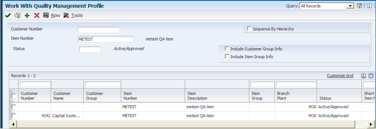
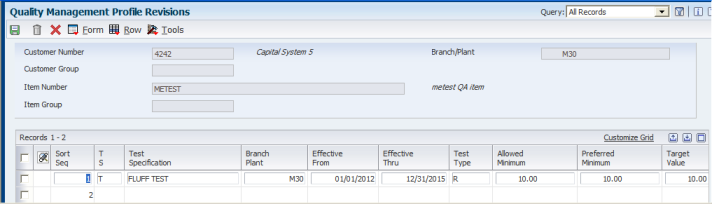
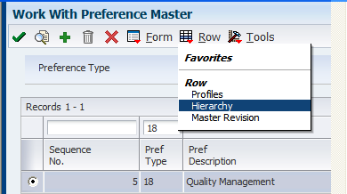
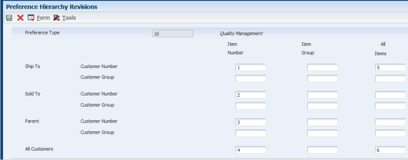
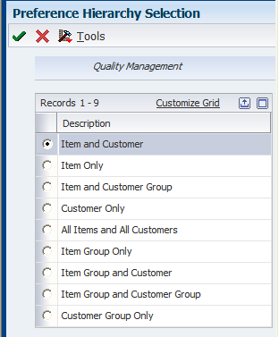
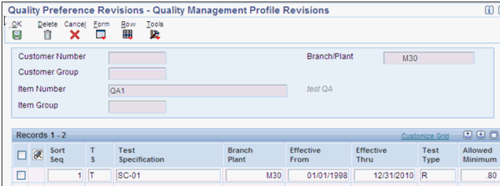

| Purpose |
| Scope |
| Details |
| Introduction |
| Preferencing In Test Results Entry |
| Preferencing In Sales Orders |
| Ship Confirmation (P4205) |
| Other Preferencing In Test Results |
| Certificate of Analysis (COA) Print (R37900) |
A "Preference Profile" is where the item number is linked to a quality "Test" or a series of Tests.
This paper details the use of Preference Profiles within Quality Management.
Users must be familiar with the Quality Management System Code 37 module functionality.
A "Preference Profile" is how an item number is linked to a "Test" or a series of Tests. Preferences are retrieved from different places within Manufacturing, Sales and Purchasing applications.
Preferencing is how a set of tests for an item that are defined in the Preference Profile are retrieved.
For example, if a lot controlled item with inventory exists, a test may be needed to make sure that it has not spoiled or deteriorated. Assume there are two tests set up for this item that measure different properties.
In Test Results Entry (P3711), the system retrieves tests from the Preference Profile before any test results can be entered.
There are several possible combinations to retrieve tests, i.e., item, customer, item and customer, item group, etc. Preferences are part of sales order setup and the same logic is applied to the Quality Management System.
Two steps must be followed to set up a Preference. The first is to set up the Hierarchy, and the second is to set up the Profile.
Here is an example of an item with 2 profiles. One is for the item, and the other is for item and customer. Each profile has a different test to perform:

This profile will return test FLUFF TEST to Test Results Entry:

Each profile should have a Hierarchy set up for it. For the above example, here is what the Hierarchy could look like:


This defines that the "Item and Ship To Number" is the first profile to be searched for. The second is "Item and Sold To", and so on. When the system matches the criteria, those tests are returned to "Test Results Entry."
| Remember that the Hierarchy must cover all situations. It is not by Branch or item. Examine the business cases, and set up the Hierarchy with as many sequence numbers as necessary. |
In order for a Profile to be found and return tests, it must be set up with a sequence number in the Hierarchy. Best practice should be a one-to-one match between the Hierarchy and Profiles. There should be at least one profile for each sequence number. Although there may be a Hierarchy for item only, this does not mean that there must be a profile for every item number. When adding a profile, choices are determined by how the Hierarchy is set up. To correspond with the previous Hierarchy example, the form below displays results after clicking to ADD a profile:

These are all of the possible Hierarchy/Profile combinations.
Additive Preferencing - This functionality returns the tests from all profiles to Test Results Entry. This permits a specific item that always requires tests SD-001 through SD-004, and in addition requires another test example, R001, performed on it, for a specific customer. In this case, all of these tests are returned. This logic is not optional.
| Note: If the same test is in two different Profiles (e.g. Item, and Item & Customer), but contains different specs, only one occurrence of the test is retrieved to Test Results. |
Lot Number /Item. This is the simplest form of Preferencing. In this example, a lot controlled item in inventory needs to be tested. The following two screens show the setup for Hierarchy and Profile.

When the item/lot number is entered in Test Results, Preferencing occurs. In this example, there is only one sequence number in the Hierarchy for item number and all customers (Item Number Only). There is only one profile - for the specific item, so the profile is found and the test retrieved.
Preferencing occurs in sales order entry (SOE) when accessing the Item Search window. Within this window, click Evaluate Inventory in the Quality Management Options. This performs an on-line evaluation of the selected line. For this to occur, results must have already been entered for the lot number. These results are compared to the customer specifications, and the lot is re-evaluated.
At Ship Confirm (G4211/P4205), a row exit to Test Results exists. The Order Format is called, and Preferencing may occur at this time. If the processing option in Test Results is set to search for existing results, these results wil be retrieved and no Preferencing occurs. Otherwise, a new set of tests will be retrieved, assuming they are set up for the customer.
Below is a matrix of what must be entered in Test Results so that the Preferencing occurs for the desired combination.
Hierarchy/Profile Required Data
1. Item Only Item
2. Customer Only Customer, Item
3. Item Group Only Item
4. Customer Group Only Customer, Item
5. Item Group and Customer Customer, Item
6. Item and Customer Group Customer, Item
7. Item Group and Customer Group Customer, Item
8. All Items and All Customers Any combination of Customer and/or Item
During the COA Print, a Preferencing and re-evaluation will occur if the processing option to Preference on the Preference tab is set to 1. Otherwise, the results for the sales order already entered are used.